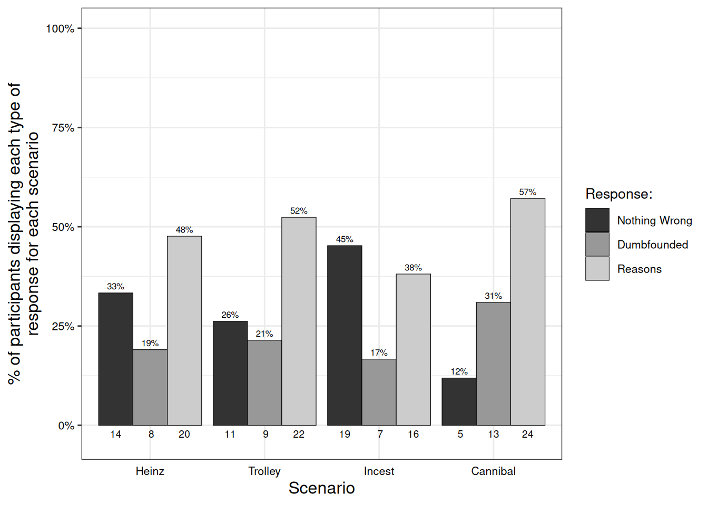
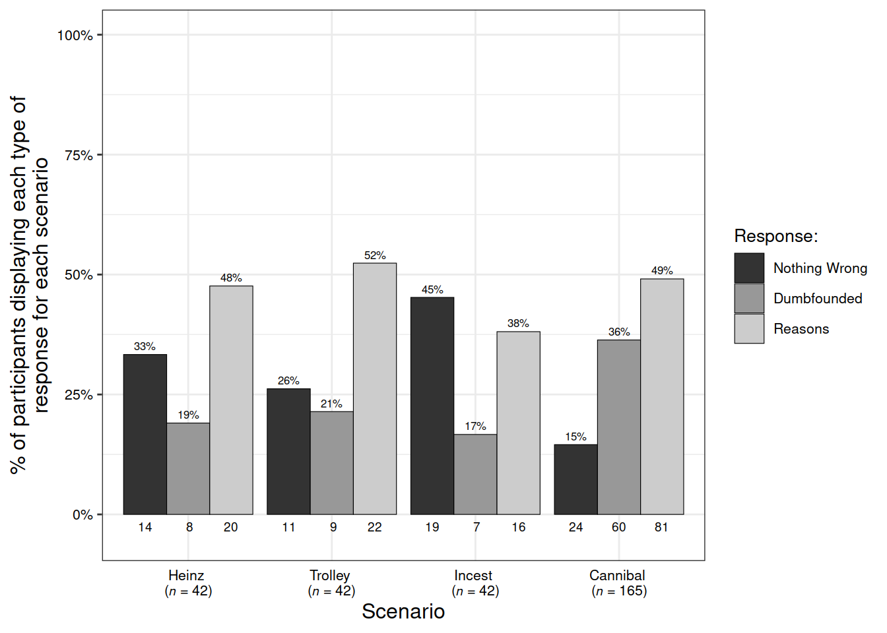
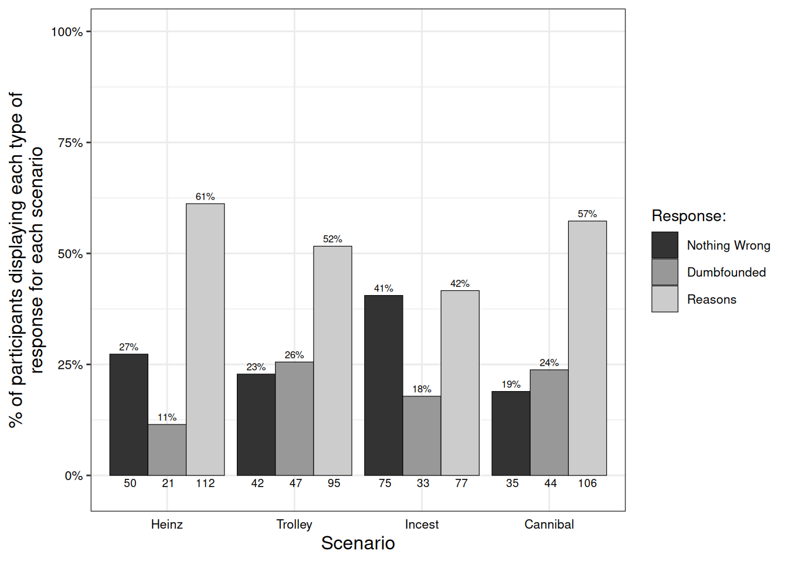
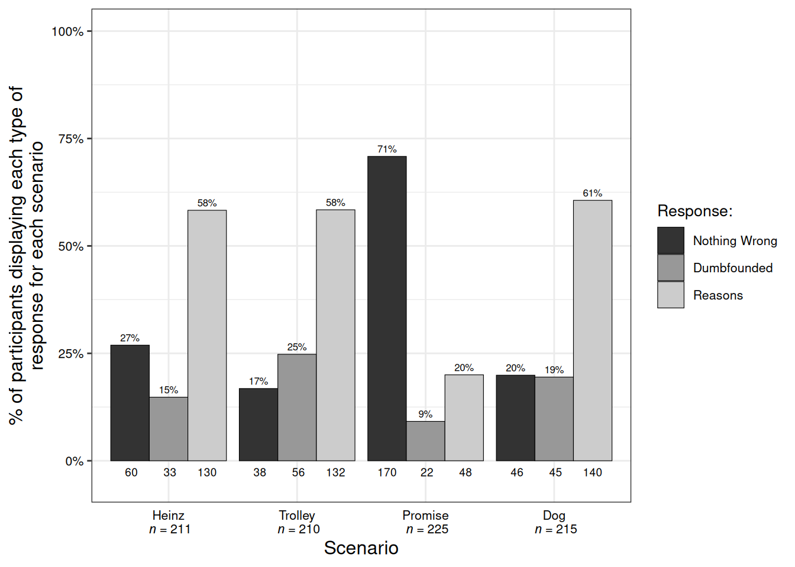

Just wrong? Or just WEIRD?
Investigating the prevalence of moral dumbfounding in non-Western samples
morality
moral dumbfounding
WEIRD
Memory & Cognition (2023)
Moral dumbfounding occurs when people maintain a moral judgment even though they cannot provide a reason for this judgment. Dumbfounded responding may include admitting to not having reasons, or the use of unsupported declarations (“It’s just wrong”) as justification for a judgment. Published evidence for dumbfounding has drawn exclusively on samples of WEIRD backgrounds (Western, educated, industrialized, rich, and democratic), and it remains unclear to what extent the phenomenon is generalizable to other populations. Furthermore, the theoretical implications of moral dumbfounding have been disputed in recent years. In three studies we apply a standardized moral dumbfounding task, and show evidence for moral dumbfounding in a Chinese sample (Study 1, N = 165), an Indian sample (Study 2, N = 181), and a mixed sample primarily (but not exclusively) from North Africa and the Middle East (MENA region, Study 3, N = 264). These findings are consistent with a categorization theories of moral judgment.”
McHugh, C., Zhang, R., Karnatak, T., Lamba, N., & Khokhlova, O. (2023). Just wrong? Or just WEIRD? Investigating the prevalence of moral dumbfounding in non-Western samples. Memory & Cognition. https://doi.org/10.3758/s13421-022-01386-z
The phenomenon of moral dumbfounding occurs when people defend a moral judgement even though they cannot provide a reason in support of this judgement (Haidt, Björklund, and Murphy 2000; McHugh et al. 2017). It typically manifests as an explicit admission of not having reasons, or the use of unsupported declarations (e.g., “It’s just wrong”) as a justification for a judgement. For almost two decades, evidence for moral dumbfounding was limited to a single study, unpublished in peer reviewed form, and with a total sample of N = 30 (Haidt, Björklund, and Murphy 2000). This meant that, while the phenomenon was widely discussed in the literature, its existence was not well supported by empirical evidence. Recent work (McHugh et al. 2017, 2020), has provided additional evidence for the existence moral dumbfounding, demonstrating that it can be reliably elicited (though perhaps it not as widespread as previously assumed, see Royzman, Kim, and Leeman 2015; McHugh et al. 2020).
Despite this recent work, it remains unclear how universal or generalisable the phenomenon is. Current evidence is limited to research involving exclusively WEIRD (Western, educated, industrialised, rich, and democratic, see Henrich, Heine, and Norenzayan 2010) samples. The purpose of the current research is to extend research on moral dumbfounding beyond these exclusively WEIRD contexts. Specifically we test for the presence of moral dumbfounding in a Chinese sample (Study 1), in an Indian sample (Study 2), and in a mixed sample from a diverse range of non-WEIRD countries (Study 3).
Evidence for Moral Dumbfounding
The earliest documented evidence for dumbfounded responding on moral issues comes from a study by Haidt, Koller, and Dias (1993). In this study participants were asked to judge a range of moral scenarios. In addition, participants were asked and to justify their judgements. Some scenarios were potentially offensive but ostensibly harmless (e.g., a family eating their family dog after it was killed by a car; cutting up and using the national flag to clean a bathroom). Haidt, Koller, and Dias (1993) found that some participants struggled to provide justifications for their judgements, and in some cases, resorted to providing unsupported declarations as justification, e.g., “Because it’s wrong to eat your dog” (Haidt, Koller, and Dias 1993, 632).
In a later study this type of responding was investigated specifically, and the term moral dumbfounding was coined (Haidt, Björklund, and Murphy 2000). In a series of interviews, Haidt, Björklund, and Murphy (2000) presented participants with moral scenarios depicting taboo behaviours that did not result in any harm.1 These scenarios (referred to as intuition scenarios) were designed to appear intuitively “wrong” but the absence of any resultant harm meant that providing a reason for judging the behaviour as wrong was difficult for participants. Responses to these intuition scenarios were contrasted against responses to a traditional reasoning scenario - the classic Heinz dilemma.2 Participants were able justify their judgements of the reasoning scenario, however, for the the intuition scenarios participants struggled to provide reasons for their judgements, presenting as morally dumbfounded.
While Haidt, Björklund, and Murphy (2000) appeared to provide evidence for moral dumbfounding, this study did not provide standardised methods for systematically eliciting moral dumbfounding. More crucially, this work did not identify a formal measure of dumbfounded responding. Later work by McHugh et al. (2017) addressed both of these limitations. Replicating and extending the original work by Haidt, Björklund, and Murphy (2000), McHugh et al. (2017) identified two measurable responses that were indicative of moral dumbfounding (admissions of not having reasons, and the use of unsupported declarations as justification for a judgement). Furthermore, McHugh et al. (2017) developed a computer-based task that reliably elicited these responses, thus providing both additional evidence for moral dumbfounding, and the means to study it more systematically, and on a larger scale.
Competing Interpretations of the Dumbfounding Narrative
The dominant narrative surrounding moral dumbfounding presents it as evidence for the intuitive nature of moral judgements, over more rationalist perspectives (see Haidt 2001). According to this view, moral judgements are based on intuitions rather than on principles or reasons. Recent theorists (e.g., Royzman, Kim, and Leeman 2015) have challenged this, arguing that moral judgements, even in the dumbfounding paradigm, are based on reasons or principles. Some of these challenges are theoretical (e.g., Sneddon 2007; Wielenberg 2014; Dwyer 2009; Jacobson 2012; Guglielmo 2018), while others include empirical work testing assumptions relevant to dumbfounding (e.g., Gray, Schein, and Ward 2014; Gray and Keeney 2015), or testing the dumbfounding paradigm directly (e.g., stanley_reasonbased_2019a?; Royzman, Kim, and Leeman 2015). A common theme permeating these challenges is that moral dumbfounding is not a real phenomenon, and that the responding observed emerges as a consequence of the experimental paradigm.
The strongest challenges to the dumbfounding narrative, appear to empirically demonstrate that people’s judgements in the dumbfounding paradigm may be attributed to specific reasons, e.g., either harm-based (believing an action may cause harm) reasons or norm-based (breaking a moral norm is inherently wrong) reasons (see, Royzman, Kim, and Leeman 2015; stanley_reasonbased_2019a?). However, addressing key methodological limitations in Royzman, Kim, and Leeman (2015), McHugh et al. (2020) demonstrated critical inconsistencies in people’s responding that undermine these reason based explanations3 providing additional evidence that moral dumbfounding is indeed a real phenomenon, though perhaps it is not as widespread as earlier reports suggest.
Moral Dumbfounding and Moral Universals
It is well established that moral judgement, moral development, and moral values can vary across cultures and across countries (Haidt, Koller, and Dias 1993; Vasquez et al. 2001; Vasudev and Hummel 1987). There have been some attempts to develop taxonomies of moral values or systems (e.g., Haidt and Joseph 2008; Shweder et al. 1997) that can be applied cross culturally or across different countries. However, the evidence for the universality of these approaches is inconsistent, leading some theorists to conclude that there are no moral universals (e.g., Davis et al. 2015; Doris and Plakias 2008; Machery and Mallon 2010; Prinz 2008a, 2008b).
At present the evidence for moral dumbfounding is based exclusively on studies involving participants from WEIRD (Henrich, Heine, and Norenzayan 2010) samples. The failure to study moral dumbfounding beyond WEIRD contexts presents a key limitation of our understanding of the phenomenon, such that it is not clear whether the phenomenon exists in other contexts. Despite the limited generalizability of moral dumbfounding, the existence of the phenomenon has informed inferences about the nature of the cognitive processes that underlie moral judgement (e.g., Haidt 2001). The generalizability these inferences would be undermined significantly if moral dumbfounding is unique to specific samples. The current studies aim to address this limitation and extend the study of moral dumbfounding beyond studies of exclusively WEIRD participants.
Individual/Cultural Differences
Given that this is the first study of moral dumbfounding in a non-WEIRD setting, we additionally investigated the potential influence of culturally relevant individual differences on moral dumbfounding. A measure that is widely regarded as one of the most prominent dimensions that varies with culture is individualism/collectivism (Renzhi et al. 2013), and as such we included this in our study for exploratory purposes.
In order to assess the possible influence of individualism/collectivism, we included the individualism-collectivism scale (ICS: Triandis and Gelfand 2011; Li and Aksoy 2007; Renzhi et al. 2013). This scale includes four dimensions: collectivism, individualism, horizontal, vertical. Collectivism is characterized by common goals, interpersonal relationships, social dependencies and connections. Collectivists regard themselves as members of an organization, and they believe that their actions should conform to the collective beliefs and obligations. Individualism emphasizes individual goals and independence. Individualists regard themselves as being separated from within an organization. Individualist behaviour depends on expectations and estimates of effectiveness. Horizontal refers to egalitarianism, while vertical emphasizes authority, principles, and hierarchy (Renzhi et al. 2013).
Regarding the specific combinations of these dimensions, vertical collectivism (VC) maintains the authoritative structure within the organization, supporting self-sacrifice and competition outside the organization. In addition to treating the self as part of the organization, horizontal collectivism (HC) also emphasizes the equality of members within the group. Vertical individualism (VI) means the increase of achievement based on individualism, with emphasis on independence and placing the self on any interpersonal relationship. Horizontal individualism (HI) refers to the addition of universal values based on individualism, and independence is to maintain a certain meaning or freedom within a principle (Renzhi et al. 2013).
The Current Research
In response to the WEIRD-centric nature of research on moral dumbfounding, we present two studies, extending research on moral dumbfounding to non-WEIRD samples. In Study 1 we assess whether or not moral dumbfounding can be elicited in a Chinese sample. In Study 2 we investigate whether or not moral dumbfounding can be found in an Indian sample. In Study 3 we test for moral dumbfounding in a sample from a diverse range of countries.
Study 1 - Chinese Sample
In Study 1 we adapted the methods and materials developed by McHugh et al. (2017) for use in a Chinese context. The primary aim of Study 1 was to investigate if moral dumbfounding can be elicited in a Chinese sample. Furthermore, we measure individual differences in individualism / collectivism and test for a possible relationship between these dimensions and dumbfounded responding.
Method
Participants and design
Study 1 was a frequency based attempted replication of McHugh et al. (2017). The aim of Study 1 was to identify if dumbfounded responding could be evoked in a Chinese context. Results are primarily descriptive. We have included exploratory analyses investigating the possible influence of individualism/collectivism (Renzhi et al. 2013) on responding.
An initial sample of 42 (34 female, 8 male, 0 other; Mage = 21.43, min = 18, max = 27, SD = 1.74) participants took part. An additional 123 (75 female, 48 male, 0 other; Mage = 22.06, min = 18, max = 45, SD = 3.76) participants completed a follow-up study with the Cannibal scenario only, and in which we experimentally manipulated psychological distance (drawing on construal level theory e.g., Liberman, Trope, and Stephan 2007). The experimental manipulation had no influence on dumbfounded responding, \(\chi\)2(2, N = 123) = 2.304, p = .316, V = 0.1023383, and as such we have included these participants in the current analysis (for clarity these studies are reported separately as Study 1a and Study 1b). Participants in this study were undergraduate students and postgraduate students, from Luoyang Normal University (China). All participants were recruited from China and had a high level of Chinese, the entire online questionnaire survey was presented in Chinese. Participation was voluntary and participants were not reimbursed for their participation.
Procedure and materials
Data were collected through the Chinese language online survey software Wenjuanxing (“Wenjuanxing” 2006). Participants were provided with a link to the online survey. The first page of the survey was an information sheet. If participants chose to continue, they proceeded to the second page, the consent form. Participants could only proceed to the remainder of the survey if they provide consent on the consent form. Upon providing consent and proceeding, participants completed some questions relating to basic demographics.
The procedure and materials for the moral dumbfounding task were taken directly from McHugh et al. (2017). These were translated into Chinese by a member of the research team whose native language was Chinese. Four moral judgement scenarios were used, two “intuition” scenarios: Incest, Cannibal, and two “reasoning” scenarios Trolley, Heinz (taken from McHugh et al. 2017, see Appendix A).
Moral dumbfounding task. The basic procedure for moral dumbfounding tasks is as follows. Participants are presented with a scenario to read. They are then asked to rate, on a 7-point Likert scale (1 = Morally wrong; 4 = Neutral; 7 = Morally right), how right or wrong they regarded the behaviour described in the scenario. Following this participants are asked to rate their confidence in their judgement (again on a 7-point Likert scale). Participants are then presented with a series of counterarguments, which refuted commonly used justifications for rating the behaviours as “wrong” (see Appendix B). After each counter-argument, participants are asked “Do you (still) think it is wrong?”, with a binary “yes/no” response option; and then they are asked “Do you have a reason for your judgement?”, with three possible response option “Yes, I have a reason”, “No I have no reason”, and “Unsure”. This sequence was repeated for each of the three counter-arguments.
Dumbfounding is measured using the “critical slide” which contains a statement defending the behaviour, and a question asking how the behaviour could be wrong (see Appendix C). There are three possible answer options: (a) “There is nothing wrong”; (b) an admission of not having reasons (“It’s wrong but I can’t think of a reason”); and finally a judgement with accompanying justification (c) “It’s wrong and I can provide a valid reason”. The selecting of option (b), the admission of not having reasons, is taken to be a dumbfounded response. Participants who selected (c) were promoted to type a reason on the next page. The order of these response options was randomised.
Following the critical slide, participants rated the behaviour again, and completed the post-discussion questionnaire devised by Haidt, Björklund, and Murphy (2000). They were required to rate on a 7-point Likert scale how sure were they about their judgement; how much they changed their mind; how confused were they; how irritated were they; how much was their judgement based on reason; how much was their judgement based on “gut” feeling (see Appendix D). This process is repeated in full for each moral scenario. The order of presentation of the moral scenarios was randomised.
Coding reasons. While there is a strong theoretical and empirical case for coding the reasons provided for unsupported declarations or tautological responses, as dumbfounded responses (see McHugh et al. 2017), this approach has been challenged by claims that these responses constitute the expression of a normative position (e.g., Royzman, Kim, and Leeman 2015). In response to this challenge, we adopt an “admission of not having reasons” as the only measure of moral dumbfounding in these studies. While this measure provides a more conservative estimate of the prevalence of moral dumbfounding, it provides a considerably less ambiguous estimate.
Individualism-collectivism scale. Following the dumbfounding task, participants completed the individualism-collectivism scale (Li and Aksoy 2007, see Appendix E). This sixteen-item scale includes four sub-scales: Vertical Collectivism (VC), Horizontal Collectivism (HC), Vertical Individualism (VI) and Horizontal Individualism (HI). The responses were recorded on a 9-point Likert scale ranging from 1 = strongly disagree, to 9 = strongly agree. The entire study lasted approximately twenty minutes.
Results and Discussion
Judgements of the scenarios
The mean initial ratings for each scenario are as follows: MHeinz = 4.76, SDHeinz = 2.07; MCannibal = 1.52, SDCannibal = 1.13; MIncest = 2.88, SDIncest = 2.23; MTrolley = 3.29, SDTrolley = 1.95. The mean revised ratings for each scenario are as follows: MHeinz = 4.74, SDHeinz = 2.04; MCannibal = 1.6, SDCannibal = 1.08; MIncest = 2.9, SDIncest = 2.13; MTrolley = 3.36, SDTrolley = 2.03. The proportion of wrong, neutral, and ok, judgements for each scenario are displayed in Table @ref(tab:tab2judge).
(#tab:tab2judge)
Valence of initial and revised judgements for each scenarion for each study
| N | percent | N | percent | N | percent | N | percent | ||
|---|---|---|---|---|---|---|---|---|---|
| Study 1a | Initial: Wrong | 9 | 21.43% | 17 | 40.48% | 25 | 59.52% | 37 | 88.1% |
| Initial: Neutral | 13 | 30.95% | 19 | 45.24% | 8 | 19.05% | 4 | 9.52% | |
| Initial: ok | 20 | 47.62% | 6 | 14.29% | 9 | 21.43% | 1 | 2.38% | |
| Revised: Wrong | 10 | 23.81% | 19 | 45.24% | 23 | 54.76% | 37 | 88.1% | |
| Revised: Neutral | 12 | 28.57% | 14 | 33.33% | 10 | 23.81% | 5 | 11.9% | |
| Revised: ok | 20 | 47.62% | 9 | 21.43% | 9 | 21.43% | 0 | 0% | |
| Study 1b | Initial: Wrong | - | - | - | - | - | - | 84 | 68.29% |
| Initial: Neutral | - | - | - | - | - | - | 21 | 17.07% | |
| Initial: OK | - | - | - | - | - | - | 18 | 14.63% | |
| Initial: Wrong | - | - | - | - | - | - | 80 | 65.04% | |
| Initial: Neutral | - | - | - | - | - | - | 28 | 22.76% | |
| Initial: OK | - | - | - | - | - | - | 15 | 12.2% | |
| Study 2 | Initial: Wrong | 132 | 70.21% | 127 | 67.55% | 117 | 62.23% | 146 | 77.66% |
| Initial: Neutral | 17 | 9.04% | 18 | 9.57% | 45 | 23.94% | 27 | 14.36% | |
| Initial: ok | 36 | 19.15% | 39 | 20.74% | 23 | 12.23% | 12 | 6.38% | |
| Revised: Wrong | 138 | 73.4% | 124 | 65.96% | 110 | 58.51% | 147 | 78.19% | |
| Revised: Neutral | 13 | 6.91% | 23 | 12.23% | 39 | 20.74% | 24 | 12.77% | |
| Revised: ok | 32 | 17.02% | 37 | 19.68% | 36 | 19.15% | 14 | 7.45% | |
| Study 3 | Initial: Wrong | 155 | 57.2% | 151 | 55.72% | 82 | 30.26% | 176 | 64.94% |
| Initial: Neutral | 37 | 13.65% | 42 | 15.5% | 99 | 36.53% | 32 | 11.81% | |
| Initial: ok | 36 | 13.28% | 36 | 13.28% | 62 | 22.88% | 23 | 8.49% | |
| Revised: Wrong | 148 | 54.61% | 140 | 51.66% | 51 | 18.82% | 173 | 63.84% | |
| Revised: Neutral | 37 | 13.65% | 53 | 19.56% | 96 | 35.42% | 30 | 11.07% | |
| Revised: ok | 37 | 13.65% | 33 | 12.18% | 91 | 33.58% | 23 | 8.49% |
A paired samples t-test revealed no differences in the ratings of behaviours from time one to time two, Heinz, t(81.979254) = 0.053, p = .958, d = 0.0115954; Cannibal, t(81.8464504) = -0.296, p = .768, d = 0.0644897; Incest, t(81.8102068) = -0.05, p = .960, d = 0.0109172; Trolley, t(81.868551) = -0.164, p = .870, d = 0.0358119.
A one-way ANOVA revealed significant differences in initial judgements depending on scenario, F(3, ,, , 164) = 20.77, p < .001, partial \(\eta\)2 = .275. Tukey’s post-hoc pairwise comparison revealed that judgements in the Heinz dilemma were significantly more favourable than for each of the other scenarios: Cannibal, p < .001, Incest, p < .001, Trolley, p = .003; while judgements of Cannibal were significantly more harsh than all other scenarios: Heinz, p < .001, Incest, p = .007. Trolley, p < .001; there was no significant difference between judgements of Incest and of Trolley, p = .762.
A one-way ANOVA revealed the same pattern of differences in revised judgements depending on scenario, F(3, ,, , 164) = 20.19, p < .001, partial \(\eta\)2 = .270. Again, Tukey’s post-hoc pairwise comparison revealed that judgements in the Heinz dilemma were significantly more favourable than for each of the other scenarios: Cannibal, p < .001, Incest, p < .001, Trolley, p = .005; while judgements of Cannibal were significantly more harsh than all other scenarios: Heinz, p < .001, Incest, p = .009. Trolley, p < .001; there was no significant difference between judgements of Incest and of Trolley, p = .685.
Tables of other Responses
(#tab:tab2other)
Means and Standard Deviations for initial and revised confidence ratings, and for self-reported changed mind for each scenario for each study
| M | SD | M | SD | M | SD | M | SD | ||
|---|---|---|---|---|---|---|---|---|---|
| Study 1a | Initial Confidence | 5.5 | 1.3 | 5.5 | 1.5 | 5.4 | 1.2 | 5.8 | 1.7 |
| Revised Confidence | 5.7 | 1.4 | 5.4 | 1.7 | 5.4 | 1.5 | 6.1 | 1.5 | |
| Changed Mind | 2.7 | 2 | 2.6 | 1.9 | 2.5 | 2.1 | 2.5 | 2.1 | |
| Study 1b | Initial Confidence | - | - | - | - | - | - | 4.9 | 1.6 |
| Revised Confidence | - | - | - | - | - | - | 5.1 | 1.7 | |
| Changed Mind | - | - | - | - | - | - | 2.5 | 1.7 | |
| Study 2 | Initial Confidence | 5.9 | 1.2 | 5.3 | 1.6 | 5.8 | 1.4 | 5.6 | 1.4 |
| Revised Confidence | 5.8 | 1.3 | 5.5 | 1.5 | 5.7 | 1.4 | 5.7 | 1.3 | |
| Changed Mind | 1.7 | 1.3 | 2.1 | 1.5 | 2 | 1.6 | 1.8 | 1.4 | |
| Study 3 | Initial Confidence | 5.8 | 1.6 | 5.4 | 1.8 | 5.6 | 1.5 | 5.8 | 1.6 |
| Revised Confidence | 5.6 | 1.6 | 5.5 | 1.6 | 5.7 | 1.4 | 6 | 1.5 | |
| Changed Mind | 2.1 | 1.6 | 2.1 | 1.5 | 2.2 | 1.7 | 1.7 | 1.3 |
(#tab:tabPostQs)
Means and Standard Deviations for responses to the post-discussion questionnaire for each scenario for each study
| M | SD | M | SD | M | SD | M | SD | ||
|---|---|---|---|---|---|---|---|---|---|
| Study 1a | Confused | 2.3 | 1.6 | 3 | 2.2 | 2.3 | 1.6 | 2.4 | 2.1 |
| Irritated | 2.3 | 1.6 | 2.9 | 2 | 2.5 | 2 | 3.6 | 2.5 | |
| Reason-Based | 5.2 | 1.8 | 5.2 | 1.8 | 5.6 | 1.6 | 5.6 | 1.8 | |
| Gut-Based | 3.5 | 2 | 3.7 | 2 | 3.4 | 2 | 3.7 | 2.3 | |
| Study 1b | Confused | - | - | - | - | - | - | 3 | 2.1 |
| Irritated | - | - | - | - | - | - | 3.7 | 2.1 | |
| Reason-Based | - | - | - | - | - | - | 5.2 | 1.6 | |
| Gut-Based | - | - | - | - | - | - | 4.3 | 1.9 | |
| Study 2 | Confused | 1.9 | 1.4 | 2.4 | 1.7 | 2 | 1.6 | 2 | 1.4 |
| Irritated | 2.2 | 1.7 | 2.3 | 1.7 | 2.4 | 1.9 | 2.6 | 1.9 | |
| Reason-Based | 5.5 | 1.7 | 5.1 | 1.8 | 5.1 | 1.8 | 5.2 | 1.9 | |
| Gut-Based | 3.5 | 2.3 | 3.4 | 2.1 | 3.8 | 2.2 | 3.4 | 2.2 | |
| Study 3 | Confused | 2.4 | 1.9 | 2.8 | 2 | 2.3 | 1.8 | 2.1 | 1.7 |
| Irritated | 3.3 | 2.3 | 3.3 | 2.2 | 2.3 | 1.8 | 4 | 2.4 | |
| Reason-Based | 5.5 | 1.5 | 5.4 | 1.8 | 5.5 | 1.7 | 5.5 | 1.8 | |
| Gut-Based | 3.9 | 2.1 | 3.7 | 2.2 | 3.9 | 2.2 | 4 | 2.4 |
Measuring dumbfounding
Participants who selected the admission of not having reasons were identified as dumbfounded. Across the four scenarios (Study 1a), 21 participants (50%) provided a dumbfounded response at least once. In Study 1b, 47 participants, (38.2113821%) provided a dumbfounded response for the Cannibal scenario. Table @ref(tab:tab2dumb) shows the number and percentage of participants who selected each response for each scenario across Studies 1a and 1b. Figure @ref(fig:chinesefig) shows this information for Study 1a, while Figure @ref(fig:chinesefig2) additionally includes the responses for Study1b. Crucially for the current study, rates of dumbfounded responding for each scenario in Study 1a were significantly greater than zero, Heinz: z = 2.97, p = .003; Trolley: z = 3.17, p = .001; Incest: z = 2.76, p = .006; Cannibal: z = 3.92, p < .001. Similarly rates of dumbfounded responding in Study 1b were significantly greater than zero for the Cannibal scenario, z = 7.62, p < .001.
(#tab:tab2dumb)
Observed frequency and percentage of each of the responses: dumbfounded, nothing wrong, and reasons provided for each scenario for each study
| N | percent | N | percent | N | percent | N | percent | ||
|---|---|---|---|---|---|---|---|---|---|
| Study 1a | Nothing wrong | 14 | 33.33% | 11 | 26.19% | 19 | 45.24% | 5 | 11.9% |
| Dumbfounded | 8 | 19.05% | 9 | 21.43% | 7 | 16.67% | 13 | 30.95% | |
| Reasons | 20 | 47.62% | 22 | 52.38% | 16 | 38.1% | 24 | 57.14% | |
| Study 1b | Nothing wrong | - | - | - | - | - | - | 19 | 15.45% |
| Dumbfounded | - | - | - | - | - | - | 47 | 38.21% | |
| Reasons | - | - | - | - | - | - | 57 | 46.34% | |
| Study 2 | Nothing wrong | 50 | 27.14% | 42 | 22.8% | 75 | 40.71% | 35 | 19% |
| Dumbfounded | 21 | 11.4% | 47 | 25.51% | 33 | 17.91% | 44 | 23.88% | |
| Reasons | 112 | 60.79% | 95 | 51.56% | 77 | 41.79% | 106 | 57.53% | |
| Study 3 | Nothing wrong | 60 | 22.14% | 38 | 14.02% | 170 | 62.73% | 46 | 16.97% |
| Dumbfounded | 33 | 12.18% | 56 | 20.66% | 22 | 8.12% | 45 | 16.61% | |
| Reasons | 130 | 47.97% | 132 | 48.71% | 48 | 17.71% | 140 | 51.66% |

There was no significant difference in observed rates of dumbfounded responding depending on which scenario was being discussed, \(\chi\)2(6, N = 271) = 12.34, p = .055. Similarly, there was no influence of type of scenario (reasoning vs intuition) on rates of dumbfounded responding \(\chi\)2(2, N = 271) = 0.31, p = .855.
We found clear evidence for dumbfounded responding in our Chinese sample. Interestingly, while the Incest scenario is generally regarded as the most reliable for eliciting moral dumbfounding in Western samples (e.g., Royzman, Kim, and Leeman 2015), Cannibal appeared to be the scenario most likely to elicit dumbfounding in this sample. While this difference in responding to the critical slide is not statistically significant, we did observe significantly harsher judgements for Cannibal than for the other scenarios. The pattern of responding to the critical slide is therefore not surprising. Furthermore, it is possible that the small sample size meant that our study was not sufficiently powered to detect differences in responding to the critical slide. As such, we note that the converging evidence across three measures (initial judgement, revised judgement, and critical slide), point towards issues surrounding death and respect for the dead as being more relevant in this Chinese sample. This is consistent with existing research on the death taboo, and the importance of death in Chinese culture (e.g., Selin and Rakoff 2019; Wu and Lu 2011). This interpretation is further corroborated by analysis of the open-ended responses, with 20 participants (47.62%) providing statements such as “Jennifer eating human flesh is an immoral and uncivilized behaviour”. This suggests that while WEIRD samples appear to be more inclined to moralise, and present as dumbfounded for, the Incest scenario, it appears (from our small and limited sample) that it is the Cannibal scenario that is of greater concern to Chinese participants.
Individual differences (Study 1a)
A hierarchical linear regression was conducted to test the possible relationship between ICS (Renzhi et al. 2013), and susceptibility to dumbfounding. Susceptibility to dumbfounding was operationalised by creating a new variable representing the number of times each participant provided a dumbfounded response. This measure was included as our outcome variable, and the four sub-scales of ICS were included as predictor variables. The overall model did not significantly predict susceptibility to dumbfounding \(R^2 = .09\), \(F(4, 37) = 0.95\), \(p = .448\).
We conducted a series of multinomial logistic regressions to investigate the possible relationship between ICS (Renzhi et al. 2013) and responding to each of the scenarios individually. Response to the critical slide scenario was the dependent variable for each scenario, and the four sub-scales of the ICS were included as predictor variables.
The overall model did not significantly predict responses for the Heinz dilemma, \(\chi\)2(8, N = 42) = 10.48, p = .233, the observed power was 0.61; neither did the model significantly predict responses for the Trolley scenario, \(\chi\)2(8, N = 42) = 11.02, p = .201, the observed power was 0.64; the Incest scenario, \(\chi\)2(8, N = 42) = 13.92, p = .084, the observed power was 0.76; nor the Cannibal scenario, \(\chi\)2(8, N = 42) = 6.84, p = .554, the observed power was 0.41.
Individual differences (Study 1b)
Given the larger sample size in Study 1b, we additionally tested if ICS (Renzhi et al. 2013) predicted responses to the Cannibal scenario in Study 1b. We conducted a multinomial logistic regression with response to the critical slide as the outcome variable and the four sub-scales of the ICS entered as predictor variables. Overall the model did not significantly predict responses to the critical slide for the Cannibal scenario, \(\chi\)2(8, N = 123) = 10.96, p = .204, the observed power was 0.64.
Study 2 - Indian Sample
Having demonstrated dumbfounded responding in a Chinese context, the aim of Study 2 was to assess if dumbfounded responding can be elicited in an Indian context.
Method
Participants and design
Study 2 was a frequency based attempted replication of McHugh et al. (2017). The aim of Study 2 was to identify if dumbfounded responding could be evoked in an Indian context.
A total sample of 188 (116 female, 69 male, 0 other, 3 declined to report their gender; Mage = 22.88, min = 16, max = 39, SD = 2.55) participants took part. The breakdown of participants’ religion is as follows, Hinduism: n = 138, Islam: n = 4, Christianity: n = 7, Sikhism: n = 4, Buddhism: n = 0, Jainism: n = 8, other: n = 10, and 17 participants declined to provide their religion. All participants were of Indian nationality, and 164 indicated that they resided in India at the time of completing the survey. Participants were recruited through snowball sampling.
Procedure and materials
The procedure for Study 2 was the same as for Study 1, with some minor changes. Given the diversity of languages in India, and the high proficiency of English among Indian nationals, all written materials were presented in English. The survey was programmed and presented using Qualtrics. The demographic information recorded additionally included religion, given the prominence and diversity of religions in Indian society. We also included the meaning in life questionnaire (MLQ: Steger et al. 2008) in Study 2. The entire study lasted twenty to twenty-five minutes.
Results and Discussion
Judgements of the scenarios
The mean initial ratings for each scenario were as follows: MHeinz = 2.61, SDHeinz = 1.88; MCannibal = 2.1, SDCannibal = 1.52; MIncest = 2.66, SDIncest = 1.84; MTrolley = 2.83, SDTrolley = 1.84. The mean revised ratings for each scenario are as follows: MHeinz = 2.66, SDHeinz = 1.84; MCannibal = 2.15, SDCannibal = 1.5; MIncest = 2.94, SDIncest = 1.94; MTrolley = 2.84, SDTrolley = 1.81. The proportion of wrong, neutral, and ok, judgements for each scenario are displayed in Table @ref(tab:tab2judge).
A paired samples t-test revealed no differences in the ratings of behaviours from time one to time two, Heinz, t(365.9540429) = -0.26, p = .795, d = 0.0270679; Cannibal, t(367.9546849) = -0.31, p = .757, d = 0.0322612; Incest, t(367.0415483) = -1.403, p = .161, d = 0.1459137; Trolley, t(365.8881139) = -0.057, p = .954, d = 0.0059546.
A one-way ANOVA revealed significant differences in initial judgements depending on scenario, F(3, ,, , 735) = 5.72, p < .001, partial \(\eta\)2 = .023. Tukey’s post-hoc pairwise comparison revealed that judgements of Cannibal were significantly more harsh than all other scenarios: Heinz, p = .033, Incest, p = .013. Trolley, p < .001; there were no significant differences in the ratings of the other scenarios, Heinz/Incest, p = .988, Heinz/Trolley, p = .631, Incest/Trolley, p = .819.
A one-way ANOVA revealed the same pattern of differences in revised judgements depending on scenario, F(3, ,, , 733) = 7.17, p < .001, partial \(\eta\)2 = .029. Again, Tukey’s post-hoc pairwise comparison revealed that judgements of Cannibal were significantly more harsh than all other scenarios: Heinz, p = .034, Incest, p < .001. Trolley, p = .001; there were no significant differences in the ratings of the other scenarios, Heinz/Incest, p = .416, Heinz/Trolley, p = .763, Incest/Trolley, p = .944.
Measuring dumbfounding
Participants who selected the admission of not having reasons were identified as dumbfounded. Across the four scenarios 90 participants (49.1803279%) provided a dumbfounded response at least once. Table @ref(tab:tab2dumb) and Figure @ref(fig:indiafig) show the number and percentage of participants who selected each response for each scenario. Rates of dumbfounded responding for each scenario in Study 2 were significantly greater than zero, Heinz: z = 4.6, p < .001; Trolley: z = 7.35, p < .001; Incest: z = 6.03, p < .001; Cannibal: z = 7.08, p < .001, thus providing evidence for moral dumbfounding in our Indian sample. To test fot the possibility of order effects, we conducted a chi-square test for independence which revealed no significant differences in responses to the critical slide depending on when the scenario was presented, \(\chi\)2(6, N = 183) = 8, p = .238.

A chi-square test for independence revealed significant differences in responses to the critical slide depending on which scenario was being discussed, \(\chi\)2(6, N = 183) = 36.86, p < .001. Table @ref(tab:tabchisq1) shows the observed counts, expected counts and standardised residuals for each response for each scenario. For Heinz, people were significantly better at providing reasons, and significantly less likely to present as dumbfounded; while people were significantly more likely to be dumbfounded by Trolley than expected; for Incest, people were significantly less likely to provide reasons, and significantly more likely to select “There is nothing wrong” than expected; finally for Cannibal significantly fewer than expected selected “There is nothing wrong”.
The observed variability was not related to the type of scenario (intuition vs reasoning), with no relationship between type of scenario and response to the critical slide being observed, \(\chi\)2(2, N = 183) = 3.63, p = .163.
(#tab:tabchisq1)
Observed counts, expected counts, and standardised residuals for each response to the critical slide depending on Scenario
| Response | Heinz | Trolley | Incest | Cannibal | |
|---|---|---|---|---|---|
| Nothing Wrong | Observed count | 50 | 42 | 75 | 35 |
| Expected count | 50 | 50 | 51 | 51 | |
| Standardised residuals | -0.03 | -1.61 | 4.63** | -2.99* | |
| Dumbfounded | Observed count | 21 | 47 | 33 | 44 |
| Expected count | 36 | 36 | 36 | 36 | |
| Standardised residuals | -3.22* | 2.31* | -0.73 | 1.62 | |
| Reason | Observed count | 112 | 95 | 77 | 106 |
| Expected count | 97 | 97 | 98 | 98 | |
| Standardised residuals | 2.59* | -0.4 | -3.56** | 1.38 |
Note. * = sig. at < .05; ** = sig. at < .001
Study 2 provided evidence that dumbfounded responding can be elicited in an Indian sample. Interestingly, the Cannibal appeared to be of more concern to the participants in this sample than the Incest scenario. Indeed, the proportion of participants selecting “there is nothing wrong” for the Incest scenario was significantly higher (75 participants; 40.7055631%) than for the other scenarios. This also appears to be higher than reported in previous studies involving WEIRD samples, however there is notable fluctuation in the selecting of this response for the Incest scenario, ranging from 16.7% (McHugh et al. 2017, Study 3a) to 32.4% (McHugh et al. 2020, Study 2). Regarding the Cannibal scenario, it appears the relative importance of death observed in Study 1 is similarly present in our Study 2 sample, pointing towards potentially important cultural differences that should be considered in future studies.
Individual differences
A hierarchical linear regression was conducted to test the possible relationship between ICS (Renzhi et al. 2013), MLQ (Steger et al. 2008), and susceptibility to dumbfounding. As in Study 1a, we created a new variable by calculating the number of times each participant provided a dumbfounded response, and used this variable as a measure of participants’ susceptibility to dumbfounding. This measure was our outcome variable, and the four sub-scales of ICS, along with both sub-scales of the MLQ, were included as predictor variables. The overall model was a significant predictor of susceptibility to dumbfounding \(R^2 = .08\), \(F(6, 176) = 2.42\), \(p = .029\), with Vertical Individualism as the only variable making a significant contribution to the model, \(b = -0.02\), 95% CI \([-0.05, 0.00]\), \(t(176) = -2.03\), \(p = .044\), see Table @ref(tab:regressiontable).
(#tab:regressiontable)
Study 2: Predictors of susceptibility to moral dumbfounding
| Predictor | \(b\) | 95% CI | \(t\) | \(\mathit{df}\) | \(p\) |
|---|---|---|---|---|---|
| Intercept | 1.62 | [0.51, 2.72] | 2.88 | 176 | .004 |
| VC | 0.02 | [0.00, 0.05] | 1.96 | 176 | .052 |
| HC | 0.00 | [-0.03, 0.03] | -0.14 | 176 | .886 |
| VI | -0.02 | [-0.05, 0.00] | -2.03 | 176 | .044 |
| HI | -0.03 | [-0.06, 0.00] | -1.75 | 176 | .082 |
| MLQ Presence | -0.01 | [-0.04, 0.01] | -1.21 | 176 | .229 |
| MLQ Search | 0.01 | [-0.02, 0.04] | 0.92 | 176 | .361 |
We conducted a series of logistic regressions to investigate the possible relationship between ICS (Renzhi et al. 2013) and responding to each of the scenarios individually. Response to the critical slide scenario was the dependent variable for each scenario, and the four sub-scales of the ICS were included as predictor variables.
The overall model did not significantly predict responses for the Heinz dilemma, \(\chi\)2(12, N = 183) = 13.68, p = .322, the observed power was 0.67; neither did the model significantly predict responses for the Trolley scenario, \(\chi\)2(12, N = 183) = 14.43, p = .274, the observed power was 0.7.
Interestingly, the overall model significantly predicted responses for the Incest scenario, \(\chi\)2(12, N = 183) = 26.33, p = .010, the observed power was 0.95. The overall model explained between 10.68% (Cox and Snell R square) and 14.43% (Nadelkerke R squared) of the variance in responses to the critical slide. The only significant predictors in the model were Horizontal Individualism, and Vertical Collectivism. As HI increased, participants were significantly more likely to select “there is nothing wrong” than to provide reasons for their judgement, Wald = 7.44, p = .006, odds ratio = 1.1097603, 95% CI [1.0297624, 1.1959729]. As VC increased, participants were significantly more likely to present as dumbfounded than to provide reasons, Wald = 5.01, p = .025, odds ratio = 0.9151576, 95% CI [0.8467967, 1.0036718].
The overall model also significantly predicted responses for the Cannibal scenario, \(\chi\)2(12, N = 183) = 24.63, p = .017, the observed power was 0.94. The overall model explained between 7.16% (Cox and Snell R square) and 11.49% (Nadelkerke R squared) of the variance in responses to the critical slide. Meaning in Life: Presence (Steger et al. 2008) was the only significant predictor in the model, as Meaning in Life: Presence, increased, participants were significantly more likely provide reasons than to present as dumbfounded, Wald = 5.81, p = .016, odds ratio = 0.9258257, 95% CI [0.8695836, 0.9857055].
Study 3 - Mixed Sample
Having demonstrated dumbfounded responding in targeted samples in two different countries, the aim of Study 3 was to investigate if dumbfounded responding could be elicited in a more diverse sample recruited from a range of non-WEIRD countries.
Method
Participants and design
Study 3 was a frequency based attempted replication of McHugh et al. (2017). The aim of Study 3 was to identify if dumbfounded responding could be evoked in a mixed sample of participants from a selection of non-WEIRD countries, primarily North Africa and the Middle East.
An initial sample of four-hundred-and-sixty-three participants were recruited for Study 3. Some participants did not provide full responses for all four scenarios (the total number of participants who completed the Critial Slide for all four scenarios was n = 203. In removing participants with missing data, we retained all participants who completed the Critical Slide for at least one scenario. Following this, we were left with a total sample of N = 282 (171 female, 103 male, 3 other, 5 declined to report their gender; Mage = 27.71, min = 18, max = 68, SD = 12.46).
(#tab:tabcountries)
Participants by Country
| Country | Frequency |
|---|---|
| 1 | 1 |
| Algeria | 2 |
| Bahrain | 5 |
| Bangladesh | 2 |
| Egypt | 25 |
| india | 1 |
| India | 25 |
| indiam | 1 |
| IndiSan | 1 |
| Iran | 2 |
| Iraq | 13 |
| Israel | 1 |
| Jordan | 10 |
| Kuwait | 5 |
| Lebanon | 34 |
| Libya | 14 |
| Morocco | 1 |
| Oman | 1 |
| Pakistan | 8 |
| Palestine | 14 |
| Philippines | 13 |
| Saudi Arabia | 1 |
| South Africa | 1 |
| Sri Lanka | 4 |
| Sri Lankan | 1 |
| Sudan | 33 |
| Syria | 30 |
| UAE | 21 |
| Yemen | 1 |
Our target sample was participants from non-WEIRD countries. As such we removed 11 participants who reported being from the UK (n = 3), USA (n = 1), Canada (n = 2), Germany (n = 1), Portugal (n = 1), Netherlands (n = 1), and participants who did not provide a country of origin (n = 2). This left a total sample of N = 271 (165 female, 98 male, 3 other, 5 declined to report their gender; Mage = 27.75, min = 18, max = 68, SD = 12.32). The breakdown of participants’ nationalities is displayed in Table @ref(tab:tabcountries). The breakdown of participants’ religions is as follows, Islam: n = 176, Christianity: n = 49, Hinduism: n = 10, other: n = 21, and 15 participants declined to provide their religion.
Procedure and materials
The procedure for Study 3 was largely the same as Study 2, with some key changes. Data collection was conducted in collaboration with the Middlesex University Dubai, and participants were recruited through opportunity and snowball sampling by undergraduate students in the University. Given the potentially sensitive and offensive nature of some of the traditional dumbfounding scenarios (Incest and Cannibal), we replaced these scenarios with scenarios less likely to cause offence: Promise and Dog (see Appendix A).
The survey was programmed and presented using Qualtrics. The demographic information recorded additionally included participants’ nationality. We also included a filter question in an attempt to limit participation to participants from non-WEIRD countries. As in Study 2, we also included the meaning in life questionnaire (MLQ: Steger et al. 2008) and ICS (Renzhi et al. 2013). The entire study lasted twenty to twenty-five minutes.
Results and Discussion
Judgements of the scenarios
The mean initial ratings for each scenario were as follows: MHeinz = 2.68, SDHeinz = 1.78; MDog = 2.15, SDDog = 1.76; MPromise = 3.88, SDPromise = 1.65; MTrolley = 2.61, SDTrolley = 1.88. The mean revised ratings for each scenario are as follows: MHeinz = 2.84, SDHeinz = 1.74; MDog = 2.21, SDDog = 1.79; MPromise = 4.37, SDPromise = 1.65; MTrolley = 2.86, SDTrolley = 1.87. The proportion of wrong, neutral, and ok, judgements for each scenario are displayed in Table @ref(tab:tab2judge).
A paired samples t-test revealed no differences in the ratings of behaviours from time one to time two for Heinz, t(447.9965543) = -0.979, p = .328, d = 0.0922583; Dog, t(454.4625702) = -0.367, p = .714, d = 0.0342957; or Trolley, t(452.9942137) = -1.456, p = .146, d = 0.1365021. In contrast, participants revised ratings of Promise (M = 4.37, SD = 1.65) were significantly more favourable than their initial ratings M = 3.88, SD = 1.65, t(478.8640634) = -3.276, p = .001, d = 0.2987195
A one-way ANOVA revealed significant differences in initial judgements depending on scenario, F(3, ,, , 927) = 41.37, p < .001, partial \(\eta\)2 = .118. Tukey’s post-hoc pairwise comparison revealed that judgements of Promise were significantly more favourable than all other scenarios: Heinz, p < .001, Dog, p < .001. Trolley, p < .001; Heinz was rated significantly more favourably than Dog, = .009 there were no significant differences in the ratings of the other scenarios, Heinz/Trolley, p = .976, Dog/Trolley, p = .030.
A one-way ANOVA revealed a similar pattern of differences in revised judgements depending on scenario, F(3, ,, , 908) = 63.46, p < .001, partial \(\eta\)2 = .173. Again, Tukey’s post-hoc pairwise comparison revealed that judgements of Promise were significantly more favourable than all other scenarios: Heinz, p < .001, Dog, p < .001. Trolley, p < .001; and judgements of Dog were significantly more harsh than both Heinz, p = .001 and Trolley, p < .001; all there were no significant differences in ratings of Heinz and Trolley, p = .999.
Measuring dumbfounding
Participants who selected the admission of not having reasons were identified as dumbfounded. Across the four scenarios 109 participants (40.2214022%) provided a dumbfounded response at least once. Table @ref(tab:tab2dumb) and Figure @ref(fig:study3fig) show the number and percentage of participants who selected each response for each scenario. Rates of dumbfounded responding for each scenario in Study 2 were significantly greater than zero, Heinz: z = 5.68, p < .001; Trolley: z = 7.36, p < .001; Promise: z = 4.81, p < .001; Dog: z = 6.68, p < .001, thus providing evidence for moral dumbfounding in our MENA sample. To test for the possibility of order effects, we conducted a chi-square test for independence which revealed no significant differences in responses to the critical slide depending on when the scenario was presented, \(\chi\)2(6, N = 271) = 3.92, p = .687.

A chi-square test for independence revealed significant differences in responses to the critical slide depending on which scenario was being discussed, \(\chi\)2(6, N = 271) = 205.55, p < .001. Table @ref(tab:tabchisq1b) shows the observed counts, expected counts and standardised residuals for each response for each scenario. For Heinz, Dog, and Trolley, people were significantly more likely to provide reasons than to select “there is nothing wrong”. In contrast, for Promise participants were more likely to select “there is nothing wrong” than to present as dumbfounded, or to present as dumbfounded or provide reasons. We note that this finding may have been confounded by the responses to Promise, however the result holds when Promise is excluded from the analysis, \(\chi\)2(4, N = 271) = 11.48, p < .001. Study 3 provided further evidence that dumbfounded responding can be elicited in a non-WEIRD sample. Furthermore, the use of alternative scenarios provide evidence that moral dumbfounding can be elicited by a broader range of scenarios than normally demonstrated in the existing literature.
(#tab:tabchisq1b)
Observed counts, expected counts, and standardised residuals for each response to the critical slide depending on Scenario
| Response | Dog | Heinz | Promise | Trolley | |
|---|---|---|---|---|---|
| Nothing Wrong | Observed count | 46 | 60 | 170 | 38 |
| Expected count | 79 | 76 | 82 | 77 | |
| Standardised residuals | -5.27** | -2.61* | 13.95** | -6.32** | |
| Dumbfounded | Observed count | 45 | 33 | 22 | 56 |
| Expected count | 39 | 38 | 41 | 38 | |
| Standardised residuals | 1.18 | -0.99 | -3.74** | 3.61** | |
| Reason | Observed count | 140 | 130 | 48 | 132 |
| Expected count | 113 | 109 | 117 | 111 | |
| Standardised residuals | 4.11** | 3.22* | -10.42** | 3.29* |
Note. * = sig. at < .05; ** = sig. at < .001
Individual differences
A hierarchical linear regression was conducted to test the possible relationship between ICS (Renzhi et al. 2013), MLQ (Steger et al. 2008), and susceptibility to dumbfounding. As in Studies 1 and 2, susceptibility to dumbfounding was operationalized by calculating the number of times a participant provided a dumbfounded response. With this measure as the outcome variable, we included the four sub-scales of ICS, along with both sub-scales of the MLQ, as predictor variables in a multinomial logistic regression model. The overall model was not a significant predictor of susceptibility to dumbfounding \(R^2 = .06\), \(F(6, 179) = 2.03\), \(p = .064\) in Study 3.
We conducted a series of logistic regressions to investigate the possible relationship between ICS (Renzhi et al. 2013) and MLQ (Steger et al. 2008), and responding to each of the scenarios individually. Response to the critical slide scenario was the dependent variable for each scenario, and the four sub-scales of the ICS, along with the two sub-scales of the MLQ were included as predictor variables.
The overall model predicted responses for the Heinz dilemma, \(\chi\)2(12, N = 205) = 22.7, p = .030, the observed power was 0.91. neither did the model significantly predict responses for the Trolley scenario, \(\chi\)2(12, N = 205) = 13.45, p = .337, the observed power was 0.66. The overall model explained between 6.94% (Cox and Snell R square) and 10.25% (Nadelkerke R squared) of the variance in responses to the critical slide. The only significant predictors in the model were Vertical Individualism, and Meaning in Life: Search. As VI increased, participants were significantly more likely to select “there is nothing wrong” than to provide reasons for their judgement, Wald = 6.3, p = .377, odds ratio = 0.9733865, 95% CI [1.0151915, 1.1302198]. As Meaning in Life: Search increased, participants were significantly more likely to present as dumbfounded than to provide reasons, Wald = 5.23, p = .638, odds ratio = 1.0216129, 95% CI [1.0116615, 1.1621541].
The overall models did not significantly predict responses for any of the other scenarios: Trolley, \(\chi\)2(12, N = 195) = 13.45, p = .337, the observed power was 0.66; Promise, \(\chi\)2(12, N = 195) = 18.27, p = .108, the observed power was 0.83; Dog, \(\chi\)2(12, N = 195) = 9.43, p = .666, the observed power was 0.48.
General Discussion
The primary aim of the current studies was to investigate if moral dumbfounding is present in non-WEIRD samples. Across three studies, we adopted previously standardised materials and procedure for eliciting and measuring moral dumbfounding (McHugh et al. 2017), and tested whether dumbfounded responding could be elicited in a Chinese sample (Study 1), in an Indian Sample (Study 2), and a mixed sample (Study 3). In order to minimise ambiguity and increase confidence in our results, we employed a conservative measure of dumbfounded responding in all three studies. Participants were only identified as dumbfounded if they admitted to not having reasons for their judgement. Using this conservative measure, we found evidence for moral dumbfounding in all three samples. Our studies are the first to elicit dumbfounded responding in a non-WEIRD context, demonstrating that moral dumbfounding is not unique to WEIRD samples, and providing further evidence that dumbfounding is indeed a real phenomenon.
Study 1 showed no significant variation in rates of dumbfounded responding depending on scenario in our Chinese sample - though this may be due to an underpowered small sample.4 In Study 2 we found significant variability in responding depending on scenario, with lower rates of dumbfounding for Heinz. In Study 3, using different scenarios, we again found significant variability depending on scenario. Interestingly, in Study 2, we found higher rates of dumbfounding of Trolley, whereas previous research involving WEIRD samples has found Cannibal and Incest to be more likely to elicit dumbfounded responding than Trolley (McHugh et al. 2017). This provides some evidence that there may be cultural differences in the types of scenarios that lead to dumbfounding. This cultural variation is interesting and warrants further study for two reasons: (a) different cultures appear to evaluate moral content differently; (b) moral dumbfounding does not appear to be content specific, that is, some scenarios elicit higher rates of moral dumbfounding in some cultures, while in other cultures different scenarios appear to elicit higher rates of moral dumbfounding. Understanding this cultural variability may provide an insight into how different moral content may lead to dumbfounding which in turn could inform our understanding of the cognitive processes that underlie moral dumbfounding, and moral judgement more generally.
Individual Differences and Dumbfounded Responding
In addition to testing for the existence of moral dumbfounding in non-WEIRD samples, we investigated the possible relationship between dumbfounded responding and ICS (Renzhi et al. 2013: Studies 1 and 2) and MLQ (Steger et al. 2008: Study 2). Study 1 revealed no significant relationship between ICS and (a) overall susceptibility to dumbfounding, or (b) responses for each scenario individually.
In Study 2 we found that Vertical Individualism (Renzhi et al. 2013) was related to susceptibility to dumbfounded responding, with those scoring high in Vertical Individualism, being less likely to present as dumbfounded. It is possible that this observed relationship emerged as a result of participants’ relative motivations to do well in the task of providing reasons. Previous research (McHugh et al. 2017) provides suggestive evidence that a dumbfounded response is aversive, that people are motivated to appear consistent. This consistency can be successfully achieved by providing a reason for a judgement, or by revising a judgement and selecting “there is nothing wrong”. In contrast, providing a dumbfounded response may be seen as failing to present as consistent. The items in the Vertical Individualism sub-scale appear to provide a measure of people’s motivations to do well in relation to others (e.g., “It is important that I do my job better than others”; “When another person does better than I do, I get tense and aroused”). However, it is possible that this sub-scale additionally provides an indication of people’s motivations for success (e.g., “Winning is everything”). As such people who are more motivated to “succeed” in general, may be more motivated to avoid the perceived failure associated with a dumbfounded response. This interpretation is merely speculative, and follow up studies should investigate this in more detail.
In Study 2 we also found evidence that responses to specific scenarios were related to to the individual difference variables measured. Responses to the Incest scenario were predicted by Horizontal Individualism, and Vertical Collectivism (Renzhi et al. 2013). It is possible that this relationship emerges as a result of the content of the scenario rather than providing an insight into the cognitive processes involved in moral dumbfounding. Participants scoring higher in Horizontal Individualism were more likely to select “There is nothing wrong” than to provide a reason for their judgement. It appears that HI is linked with the valence of participants’ judgements of Incest rather than whether or not it leads to dumbfounding. A key consideration in the Incest scenario is the importance of individual autonomy. Similarly, the items in the HI sub-scale appear to relate to individual autonomy (e.g., “I rely on myself most of the time; I rarely rely on others,” “I often do ‘my own thing’,” Renzhi et al. 2013). As such it is not surprising that participants who score highly on HI, place higher value on individual autonomy when considering the Incest scenario.
Furthermore, three of the four Vertical Collectivism (Renzhi et al. 2013) items specifically relate to the importance of the family. thus providing an indirect measure of the degree to which people value the family unit. Participants who scored higher in VC were more likely to present as dumbfounded than to provide reasons for their judgement of the Incest scenario. It is likely that participants who score higher in VC regard the family as particularly important, and the Incest scenario presents an affront to the family. As such, these participants may perceive the actions of Julile and Mark as a threat to something that they value, but may not be able to articulate this as a reason for their judgement (e.g., it is too abstract, or they do not think it is an “acceptable” reason).
Finally, Meaning in Life: Presence (Steger et al. 2008), was related to responses to the Cannibal scenario, such that participants who scored higher in Meaning in Life: Presence were more likely to provide reasons for their judgements then to present as dumbfounded by Cannibal. Again this is likely due to the specific content, rather than informing the cognitive processes involved. It could be argued that the Cannibal scenario involves considerations about the value of life. Participants who score higher in Meaning in Life: Presence, have given consideration to the meaning (and by extension, value) of life (e.g., “I understand my life’s meaning”). It seems that this reflection life’s meaning may provide people with the necessary justifications/arguments/resources to articulate why they disapprove of Cannibal.
Study 3 did not find any relationship between susceptibility to dumbfounded responding and either ICS (Renzhi et al. 2013) or MLQ (Steger et al. 2008). We did find that Vertical Individualilsm predicted selecting “There is nothing wrong” for the Heinz dilemma. The content of the scenario may provide an explanation for this observed relationship. Participants were judging the behaviour of the Druggist, who charged an extremely high price for the drug he developed. The druggest’s behaviour is consistent with individualistic values, and it is not surprising that participants who score higher on this individualism measure endorse the behaviour of the druggist. Study 3 also found that participants who scored higher in Meaning in Life: Search were more likely to be dumbfounded than to provide reasons for their judgement.
Limitations and Future directions
A key limitation in the current studies is the sample make up. Participants in Study 1 were recruited through a Chinese university, participants in Study 2 were university graduates, who also were proficient in English, and participants in Study 3 were also proficient in English, and recruited through snowball sampling in a University setting. This means that none of our samples are representative of their respective population. Furthermore, the samples involved either university graduates, or those currently studying in a university setting, and as such this high level of education is a significant challenge to our stated aim of recruiting from non-WEIRD samples.
The moral foreign language effect (Cipolletti, McFarlane, and Weissglass 2016) means that the use of an English language survey in Studies 2 and 3 is another potential limitation. Previous research has shown that people appear to make more utilitarian judgements when moral scenarios are presented in another language (Costa et al. 2014). In the case of the Intuition scenarios, this could potentially lead to a higher number of participants selecting “There is nothing wrong”, rather than presenting as dumbfounded. Despite this potential confound, dumbfounded responding was observed for all scenarios in Studies 2 and 3.
Our studies were not intended as a systematic investigation of cultural differences in evaluation of specific moral content (there are other research programmes dedicated to this, e.g., Haidt and Joseph 2008; Shweder et al. 1997; Narvaez 2016). Here, we applied existing methods in three novel contexts, to assess whether or not moral dumbfounding can be elicited in these under-studied contexts. We found evidence for moral dumbfounding in a Chinese sample, an Indian sample and a mixed sample. Our results provided some evidence for cultural variation (e.g., the relative importance of the death taboo), that may inform the development of future research programmes.
Conclusion
Previous research on moral dumbfounding has exclusively studied WEIRD participants. This poses a challenge to the generalisability of the phenomenon. In three studies we tested whether or not dumbfounded responding could be elicited in non-WEIRD samples. We found evidence for moral dumbfounding in all three samples. Our findings provide some evidence that moral dumbfounding may emerge as a consequence of the nature of moral knowledge - that is, the cognitive processes that underlie the making of moral judgements seem to lead to the emergence of moral dumbfounding in diverse samples. This suggests that further study of the phenomenon, in diverse samples, may provide unique insights into the cognitive mechanisms that govern moral judgements.
Data Accessibility Statement
All participant data, and analysis scripts can be found on this paper’s project page on the Open Science Framework at https://osf.io/2h3k7/.
We used R (Version 4.1.2; R Core Team 2017) and the R-packages corrplot2021 (R-corrplot2021?), DescTools (Version 0.99.47; Andri et mult. al. 2021), desnum (Version 0.1.1; McHugh 2017), dfidx (Version 0.0.5; Croissant 2021), dplyr (Version 1.1.0; Wickham et al. 2020), forcats (Version 1.0.0; Wickham 2020), foreign (Version 0.8.82; R Core Team 2020), ggplot2 (Version 3.4.1; Wickham 2016), ggtext (Version 0.1.2; R-ggtext?), glue (Version 1.6.2; R-glue?), haven (Version 2.5.1; Wickham and Miller 2020), lme4 (Version 1.1.31; Bates et al. 2015), lmerTest (Version 3.1.3; R-lmerTest?), lsr (Version 0.5.2; Navarro 2015), lubridate (Version 1.9.2; R-lubridate?), Matrix (Version 1.5.3; Bates and Maechler 2021), mlogit (Version 1.1.1; Croissant 2020), nnet (Version 7.3.17; Venables and Ripley 2002), papaja (Version 0.1.1.9001; Aust and Barth 2020), psych (Version 2.2.9; Revelle 2021), purrr (Version 1.0.1; Henry and Wickham 2020), pwr (Version 1.3.0; Champely 2020), readr (Version 2.1.4; Wickham and Hester 2021), readxl (Version 1.4.2; Wickham and Bryan 2019), reshape2 (Version 1.4.4; Wickham 2007), rstatix (Version 0.7.2; Kassambara 2020), scales (Version 1.2.1; Wickham and Seidel 2020), stringr (Version 1.5.0; Wickham 2019), tibble (Version 3.1.8; Müller and Wickham 2021), tidyr (Version 1.3.0; Wickham and Henry 2020), tidyverse (Version 2.0.0; Wickham et al. 2019), and tinylabels (Version 0.2.3; R-tinylabels?) for all our analyses.
References
Andri et mult. al., Signorell. 2021. DescTools: Tools for Descriptive Statistics. Manual.
Aust, Frederik, and Marius Barth. 2020. papaja: Create APA Manuscripts with R Markdown. Manual.
Bates, Douglas, Martin Mächler, Ben Bolker, and Steve Walker. 2015. “Fitting Linear Mixed-Effects Models Using Lme4.” Journal of Statistical Software 67 (1): 1–48. https://doi.org/10.18637/jss.v067.i01.
Bates, Douglas, and Martin Maechler. 2021. Matrix: Sparse and Dense Matrix Classes and Methods. Manual.
Champely, Stephane. 2020. Pwr: Basic Functions for Power Analysis. Manual.
Cipolletti, Heather, Steven McFarlane, and Christine Weissglass. 2016. “The Moral Foreign-Language Effect.” Philosophical Psychology 29 (1): 23–40. https://doi.org/10.1080/09515089.2014.993063.
Costa, Albert, Alice Foucart, Sayuri Hayakawa, Melina Aparici, Jose Apesteguia, Joy Heafner, and Boaz Keysar. 2014. “Your Morals Depend on Language.” PLOS ONE 9 (4): e94842. https://doi.org/10.1371/journal.pone.0094842.
Croissant, Yves. 2020. “Estimation of Random Utility Models in R: The mlogit Package.” Journal of Statistical Software 95 (11): 1–41. https://doi.org/10.18637/jss.v095.i11.
———. 2021. Dfidx: Indexed Data Frames. Manual.
Davis, Don E., Kenneth Rice, Daryl R. Van Tongeren, Joshua N. Hook, Cirleen DeBlaere, Everett L. Jr. Worthington, and Elise Choe. 2015. “The Moral Foundations Hypothesis Does Not Replicate Well in Black Samples.” Journal of Personality and Social Psychology, September. https://doi.org/10.1037/pspp0000056.
Doris, John M., and Alexandra Plakias. 2008. “How to Argue about Disagreement: Evaluative Diversity and Moral Realism.” In Moral Psychology Volume 2, The Cognitive Science of Morality: Intuition and Diversity, edited by Walter Sinnott-Armstrong, 47–76. London: MIT.
Dwyer, Susan. 2009. “Moral Dumbfounding and the Linguistic Analogy: Methodological Implications for the Study of Moral Judgment.” Mind & Language 24 (3): 274–96. https://doi.org/10.1111/j.1468-0017.2009.01363.x.
Gray, Kurt James, and Jonathan E. Keeney. 2015. “Impure or Just Weird? Scenario Sampling Bias Raises Questions About the Foundation of Morality.” Social Psychological and Personality Science 6 (8): 859–68. https://doi.org/10.1177/1948550615592241.
Gray, Kurt James, Chelsea Schein, and Adrian F. Ward. 2014. “The Myth of Harmless Wrongs in Moral Cognition: Automatic Dyadic Completion from Sin to Suffering.” Journal of Experimental Psychology: General 143 (4): 1600–1615. https://doi.org/10.1037/a0036149.
Guglielmo, Steve. 2018. “Unfounded Dumbfounding: How Harm and Purity Undermine Evidence for Moral Dumbfounding.” Cognition 170 (January): 334–37. https://doi.org/10.1016/j.cognition.2017.08.002.
Haidt, Jonathan. 2001. “The Emotional Dog and Its Rational Tail: A Social Intuitionist Approach to Moral Judgment.” Psychological Review 108 (4): 814–34. https://doi.org/10.1037/0033-295X.108.4.814.
Haidt, Jonathan, Fredrik Björklund, and Scott Murphy. 2000. “Moral Dumbfounding: When Intuition Finds No Reason.” Unpublished Manuscript, University of Virginia.
Haidt, Jonathan, and Craig Joseph. 2008. “The Moral Mind: How Five Sets of Innate Intuitions Guide the Development of Many Culture-Specific Virtues, and Perhaps Even Modules.” In The Innate Mind Volume 3: Foundations and the Future., 367–91. Evolution and Cognition. New York, NY, US: Oxford University Press. https://doi.org/10.1093/acprof:oso/9780195332834.003.0019.
Haidt, Jonathan, Silvia Helena Koller, and Maria G. Dias. 1993. “Affect, Culture, and Morality, or Is It Wrong to Eat Your Dog?” Journal of Personality and Social Psychology 65 (4): 613–28. https://doi.org/10.1037/0022-3514.65.4.613.
Henrich, Joseph, Steven J. Heine, and Ara Norenzayan. 2010. “Most People Are Not WEIRD.” Nature 466 (7302): 29–29. https://doi.org/10.1038/466029a.
Henry, Lionel, and Hadley Wickham. 2020. Purrr: Functional Programming Tools. Manual.
Jacobson, Daniel. 2012. “Moral Dumbfounding and Moral Stupefaction.” In Oxford Studies in Normative Ethics, 2:289.
Kassambara, Alboukadel. 2020. Rstatix: Pipe-friendly Framework for Basic Statistical Tests. Manual.
Li, Fuan, and Lerzan Aksoy. 2007. “Dimensionality of Individualismcollectivism and Measurement Equivalence of Triandis and Gelfand’s Scale.” Journal of Business and Psychology 21 (3): 313–29. https://doi.org/10.1007/s10869-006-9031-8.
Liberman, Nira, Yaacov Trope, and E. Stephan. 2007. “Psychological distance.” In Social Psychology: Handbook of Basic Principles, edited by Arie W. Kruglanski and Edward Tory Higgins.
Machery, Edouard, and Ron Mallon. 2010. “Evolution of Morality.” In The Moral Psychology Handbook, edited by John M. Doris, 3–46. Oxford; New York: Oxford University Press.
McHugh, Cillian. 2017. Desnum: Creates Some Useful Functions. Manual.
McHugh, Cillian, Marek McGann, Eric R. Igou, and Elaine L. Kinsella. 2017. “Searching for Moral Dumbfounding: Identifying Measurable Indicators of Moral Dumbfounding.” Collabra: Psychology 3 (1): 1–24. https://doi.org/10.1525/collabra.79.
———. 2020. “Reasons or Rationalizations: The Role of Principles in the Moral Dumbfounding Paradigm.” Journal of Behavioral Decision Making 33 (3): 376–92. https://doi.org/10.1002/bdm.2167.
Müller, Kirill, and Hadley Wickham. 2021. Tibble: Simple Data Frames. Manual.
Narvaez, Darcia. 2016. Embodied Morality: Protectionism, Engagement and Imagination. New York, NY: Springer.
Navarro, Danielle. 2015. Learning Statistics with R: A Tutorial for Psychology Students and Other Beginners. (Version 0.6). Manual. Sydney, Australia: University of New South Wales.
Prinz, Jesse J. 2008a. “Is Morality Innate?” In Moral Psychology Volume 1: The Evolution of Morality Adaptations and Innateness. Cambridge, Mass.; London, England: The MIT press.
———. 2008b. “Resisting the Linguistic Analogy: A Commentary on Hauser, Young, and Cushman.” In Moral Psychology Volume 2, The Cognitive Science of Morality: Intuition and Diversity, edited by Walter Sinnott-Armstrong, 157–70. London: MIT.
R Core Team. 2017. “R: A Language and Environment for Statistical Computing.” Vienna, Austria: R Foundation for Statistical Computing.
———. 2020. Foreign: Read Data Stored by ’Minitab’, ’s’, ’SAS’, ’SPSS’, ’Stata’, ’Systat’, ’Weka’, ’dBase’, ... Manual.
Renzhi, Huang, Yao Shuqiao, John R. Z. Abela, Fallyn Leibovitch, and Liu Mingfan. 2013. “Key Dimensions and Validity of the Chinese Version of the Individualism-Collectivism Scale.” Chinese Studies 02 (01): 1. https://doi.org/10.4236/chnstd.2013.21001.
Revelle, William. 2021. Psych: Procedures for Psychological, Psychometric, and Personality Research. Manual. Evanston, Illinois: Northwestern University.
Royzman, Edward B., Kwanwoo Kim, and Robert F. Leeman. 2015. “The Curious Tale of Julie and Mark: Unraveling the Moral Dumbfounding Effect.” Judgment and Decision Making 10 (4): 296–313.
Selin, Helaine, and Robert M. Rakoff, eds. 2019. Death Across Cultures: Death and Dying in Non-Western Cultures. Vol. 9. Science Across Cultures: The History of Non-Western Science. Cham: Springer International Publishing. https://doi.org/10.1007/978-3-030-18826-9.
Shweder, Richard A., Nancy C Much, Manomahan Mahapatra, and Lawrence Park. 1997. “The "Big Three" of Morality (Autonomy, Community, Divinity) and the "Big Three" Explanations of Suffering.” In Morality and Health, edited by Allan M. Brandt and Paul Rozin, 119–69. Routledge.
Steger, Michael F., Todd B. Kashdan, Brandon A. Sullivan, and Danielle Lorentz. 2008. “Understanding the Search for Meaning in Life: Personality, Cognitive Style, and the Dynamic Between Seeking and Experiencing Meaning.” Journal of Personality 76 (2): 199–228. https://doi.org/10.1111/j.1467-6494.2007.00484.x.
Triandis, Harry C., and Michele J. Gelfand. 2011. “Individualism and Collectivism Scale.” American Psychological Association. https://doi.org/10.1037/t01556-000.
Vasquez, Kristin, Dacher Keltner, David H. Ebenbach, and Tracy L. Banaszynski. 2001. “Cultural Variation and Similarity in Moral Rhetorics: Voices from the Philippines and the United States.” Journal of Cross-Cultural Psychology 32 (1): 93–120. https://doi.org/10.1177/0022022101032001010.
Vasudev, Jyotsna, and Raymond C. Hummel. 1987. “Moral Stage Sequence and Principled Reasoning in an Indian Sample.” Human Development 30 (2): 105–18. https://doi.org/10.1159/000273170.
Venables, W. N., and B. D. Ripley. 2002. Modern Applied Statistics with S. Fourth. New York: Springer.
“Wenjuanxing.” 2006. Changsha Ranxing Information Technology Co., Ltd.
Wickham, Hadley. 2007. “Reshaping Data with the reshape Package.” Journal of Statistical Software 21 (12): 1–20.
———. 2016. Ggplot2: Elegant Graphics for Data Analysis. Springer-Verlag New York.
———. 2019. Stringr: Simple, Consistent Wrappers for Common String Operations. Manual.
———. 2020. Forcats: Tools for Working with Categorical Variables (Factors). Manual.
Wickham, Hadley, Mara Averick, Jennifer Bryan, Winston Chang, Lucy D’Agostino McGowan, Romain François, Garrett Grolemund, et al. 2019. “Welcome to the tidyverse.” Journal of Open Source Software 4 (43): 1686. https://doi.org/10.21105/joss.01686.
Wickham, Hadley, and Jennifer Bryan. 2019. Readxl: Read Excel Files. Manual.
Wickham, Hadley, Romain François, Lionel Henry, and Kirill Müller. 2020. Dplyr: A Grammar of Data Manipulation. Manual.
Wickham, Hadley, and Lionel Henry. 2020. Tidyr: Tidy Messy Data. Manual.
Wickham, Hadley, and Jim Hester. 2021. Readr: Read Rectangular Text Data. Manual.
Wickham, Hadley, and Evan Miller. 2020. Haven: Import and Export ’SPSS’, ’Stata’ and ’SAS’ Files. Manual.
Wickham, Hadley, and Dana Seidel. 2020. Scales: Scale Functions for Visualization. Manual.
Wielenberg, Erik J. 2014. Robust Ethics: The Metaphysics and Epistemology of Godless Normative Realism. Oxford, United Kingdom: OUP Oxford.
Wu, Anise M. S., and Lu-sha Lu. 2011. “Cognitive Obstacles Against Organ Donation: The Influence of Negative Attitudes, Norms, and Traditional Beliefs on Chinese People’s Intention to Donate Organs After Death.” Journal of Community & Applied Social Psychology 21 (1): 87–93. https://doi.org/10.1002/casp.1054.
Footnotes
One scenario (Incest) depicted an act of consensual sibling incest, using contraception; another (Cannibal) described an act of cannibalism involving a laboratory cadaver due to cremated.↩︎
Heinz could not afford drugs priced at 10 times the cost price, and steals drugs to save his wife’s life.↩︎
Participants do not articulate or consistently apply harm-based reasons/principles, nor do they articulate norm-based reasons/principles with sufficient consistency to provide evidence that these reasons are guiding their judgements in the dumbfounding paradigm (see McHugh et al. 2020).↩︎
We note that, although not statistically significant, the Cannibal scenario appeared to elicit more dumbfounded responding in the Chinese sample↩︎